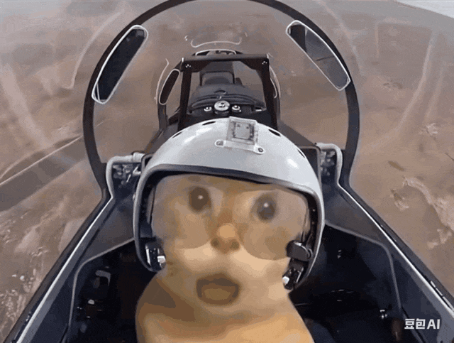
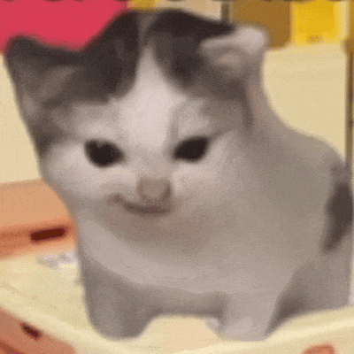
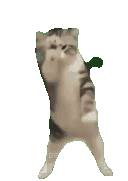

发现猫猫meme的无限魅力
探索不同猫猫meme的独特个性与美丽
热门猫猫meme
了解最受欢迎的猫猫meme品种及其特点

飞行员耄耋
性格温顺，适应能力强，是最受欢迎的猫咪品种之一。

啊～猫meme
拥有华丽的长毛和甜美的面容，性情温文尔雅。

希特勒猫meme
性格活泼好动，聪明伶俐，对主人非常忠诚。
猫猫meme休息区布局
我们的猫猫meme休息区座位安排
1号位
2号位
3号位
4号位
5号位
6号位
7号位
8号位
9号位
10号位
11号位
12号位
13号位
14号位
15号位
猫猫meme动画秀
看猫猫meme在舞台上表演！

在CSS中添加动画后，猫猫meme将自动开始表演